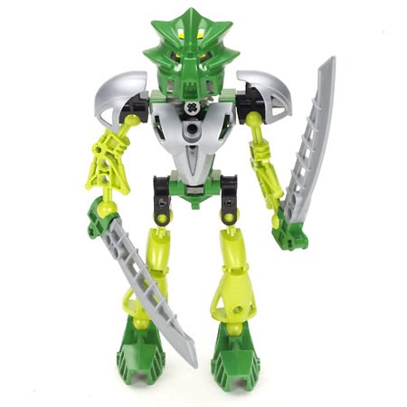

Lewa’s abilities as a Toa of Air included the power to control the wind, summon air currents, create windstorms and twisters, unleash gusts of air, and combine his powers with Gali’s to form a storm. Legends said that the storms on Mata Nui were caused by them, and the sound of thunder was when their weapons made contact.
Lewa's mask was a Kanohi Miru, a Great Mask of Levitation, allowing him to levitate in the air. Lewa Nuva's Miru Nuva allowed him greater power, and he can combine this power with his wind manipulation in order to glide. He could also share his power of levitation with his Kanohi Nuva.
After he ripped off his Krana, he still could communicate with the Bohrok. It is unknown whether or not he lost this ability over time.
As a Toa Mata, Lewa carried an Air Axe, which he could use to channel his air powers and cut through the foliage of Le-Wahi. They were later transformed into twin Air Katana that could be tucked under his arms to make glider wings. One of these Katana was snapped in half by Reidak during the search for the Kanohi Ignika on Voya Nui, but Velika later crafted a replacement for him. In Karda Nui, Lewa's adaptive armor activated, providing him rocket boosters for flight, an Air Saber, and a Midak Skyblaster.

As with most of air Toa, Lewa used humor to lighten up a situation. Being from Le-Wahi, he would sometimes combine words while speaking to form a new word, which fits the meaning of what he is talking about, a trait that all Le-Matoran shared. At first he preferred to work alone, but experience led him to understand the importance of unity. He could be very impulsive at times, often getting himself in trouble (at one time getting his Air Katana broken). As time went on, he began to mature, but still retaining his adventurous nature. He was a good friend to all the Toa.